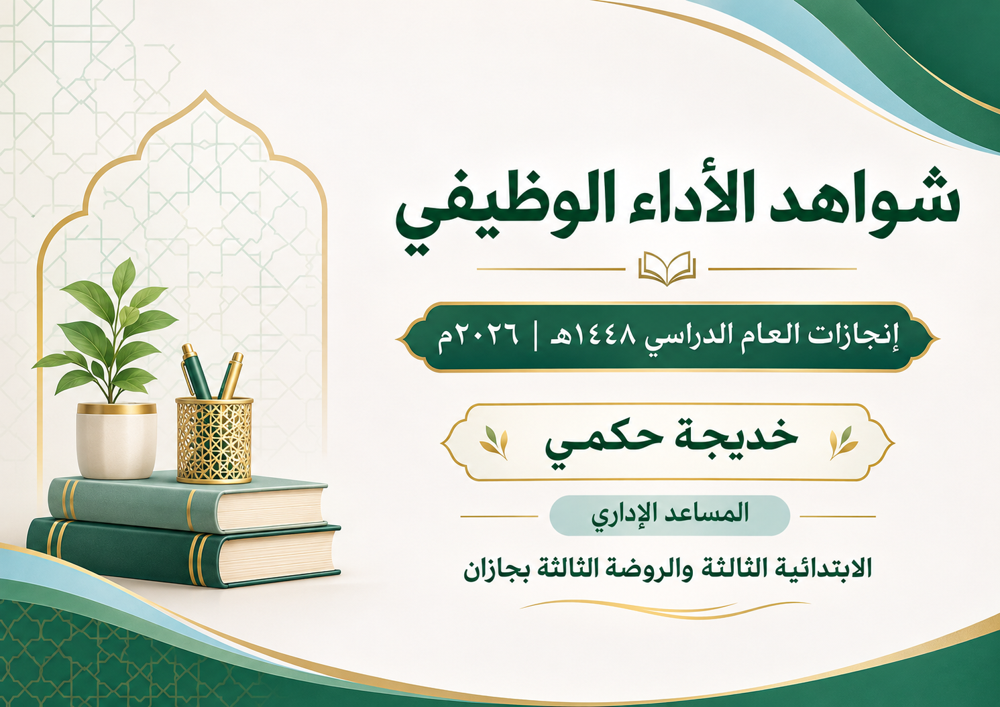

تحويل الصادر والوارد إلى رقمي
نموذج وسجل موحدان لتسجيل المعاملات، ومتابعة حالتها، والبحث عنها وحفظها وأرشفتها.
ملف إنجاز رقمي · ١٤٤٨هـ / ٢٠٢٦م
رحلة بصرية عبر المبادرات وأهداف الأداء الوظيفي، مع نبذة موجزة عن كل هدف ورمز QR للوصول إلى شواهده.

٧ أقسامبداية التغيير
مبادرتان تدعمان تنظيم العمل الإداري والتحول الرقمي: متابعة الصادر والوارد إلكترونيًا، وتوثيق الاطلاع على التعاميم والخطابات بنماذج إقرار إلكترونية.
نموذج وسجل موحدان لتسجيل المعاملات، ومتابعة حالتها، والبحث عنها وحفظها وأرشفتها.
إقرار إلكتروني بالاطلاع على التعاميم والخطابات، مع متابعة الاستجابات وحفظ كشوفها.
الأثر المتوقع: تسريع المتابعة والتبليغ، وتنظيم السجلات، وتقليل تداول الأوراق.
الهدف الأول
إعداد تقارير للجولات الإشرافية، ومساندة المعلمة في الجوانب غير التعليمية، والمتابعة الصباحية ووجبة الأطفال. المستهدف في الوصف: ١٢ تقريرًا.
متابعة الفصول والمرافق ورصد الملاحظات.
دعم التنظيم والاحتياجات الإدارية المساندة.
متابعة الاستقبال والاستعداد الصباحي.
متابعة التنظيم والنظافة والسلامة.
الأثر المتوقع: بيئة مدرسية منظمة، وتوثيق يساعد الإدارة على معالجة الملاحظات.
الهدف الثاني
إنجاز الخطابات والمعاملات الرسمية وتصنيف الصادر والوارد وفهرستهما بحسب التاريخ والموضوع والجهة. المستهدف: ٣ خطابات ومعاملات صادرة لإدارة التعليم.
التحقق من البيانات والمرفقات وإحالة المعاملة.
صياغة الخطابات ومتابعة اعتمادها وإرسالها.
ترتيب الملفات بتسمية تسهّل البحث والاسترجاع.
تحديث حالة المعاملة وحفظ نسخها.
الأثر المتوقع: دقة تنظيم المراسلات وسرعة الإحالة والمتابعة.
الهدف الثالث
إطلاع منسوبات ومنسوبي المدرسة على التعاميم الواردة والنشرات الداخلية، ومتابعة التوقيع أو الإقرار بالعلم. المستهدف: ٤ بيانات توثيق.
فرزها بحسب الموضوع والفئة المعنية.
تسجيل موضوع التعميم وتاريخه والمطلعين عليه.
متابعة التوقيعات وحفظ الكشوف المرتبطة.
متابعة الاستجابات وأرشفتها.
الأثر المتوقع: توثيق وصول التعليمات وتيسير التحقق من الاطلاع.
الهدف الرابع
تحرير نشرات وتعاميم داخلية واضحة، واعتمادها ونشرها وتوثيق ما يثبت وصولها. المستهدف: ٤ نشرات وتعاميم داخلية.
استقبال توجيهات الإدارة وتحديد الفئة المستهدفة.
لغة رسمية ومراجعة النص قبل الاعتماد.
إيصال المحتوى عبر القنوات الداخلية المناسبة.
حفظ النسخ المعتمدة وشواهد النشر.
الأثر المتوقع: وضوح التعليمات وتحسين التواصل الإداري.
الهدف الخامس
إنشاء نموذج إلكتروني موحد لمتابعة الصادر والوارد وحفظ بيانات المعاملات وأرشفتها. المستهدف: نموذج إلكتروني واحد.
اختيار البيانات والحقول اللازمة لكل معاملة.
حقول للنوع والتاريخ والموضوع والجهة والحالة.
تسجيل المعاملات وتحديث حالتها.
سجل قابل للفرز والبحث مع ضبط صلاحيات الوصول.
الأثر المتوقع: سرعة الوصول إلى المعاملات ودقة فهرستها.
الهدف السادس
دعم انتظام اليوم الدراسي ومتابعة حصص الاحتياط والسلوك الإيجابي والغياب خلال أيام التعلم عن بُعد. المستهدف: تقريران.
متابعة جاهزية الفصول والمرافق.
تنظيم متابعة التكليفات وتوثيق التغطية.
نشر التوجيهات والرسائل التوعوية.
تنظيم بيانات المتابعة ورفع حالات التعثر.
الأثر المتوقع: بيئة مدرسية منظمة ومتابعة موثقة تدعم استقرار اليوم الدراسي.
نهاية الجولة
يجمع هذا المعرض أبرز مجالات العمل الموثقة لهذا العام الدراسي. للاطلاع على الصفحات كاملة، افتحي الكتاب الرقمي.